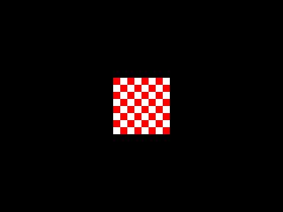
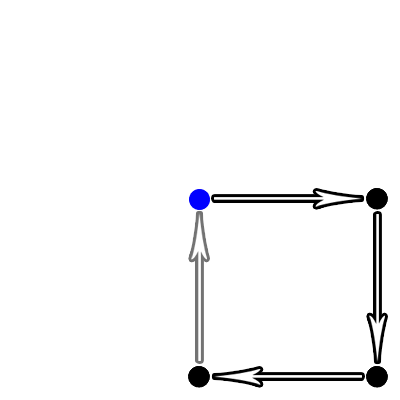
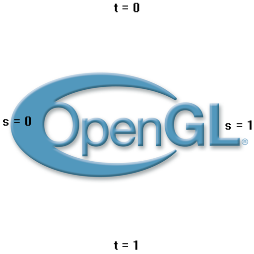

Texture Mapping and Pixel Manipulation

Last Updated 10/35/14
In this tutorial, we're going to make a checkerboard texture in memory and then map it to a quad to render a 2D image.From LTexture.h
#ifndef LTEXTURE_H
#define LTEXTURE_H
#include "LOpenGL.h"
#include <stdio.h>
class LTexture
{
public:
LTexture();
/*
Pre Condition:
-None
Post Condition:
-Initializes member variables
Side Effects:
-None
*/
~LTexture();
/*
Pre Condition:
-None
Post Condition:
-Frees texture
Side Effects:
-None
*/
bool loadTextureFromPixels32( GLuint* pixels, GLuint width, GLuint height );
/*
Pre Condition:
-A valid OpenGL context
Post Condition:
-Creates a texture from the given pixels
-Reports error to console if texture could not be created
Side Effects:
-Binds a NULL texture
*/
void freeTexture();
/*
Pre Condition:
-A valid OpenGL context
Post Condition:
-Deletes texture if it exists
-Sets texture ID to 0
Side Effects:
-None
*/
void render( GLfloat x, GLfloat y );
/*
Pre Condition:
-A valid OpenGL context
-Active modelview matrix
Post Condition:
-Translates to given position and renders textured quad
Side Effects:
-Binds member texture ID
*/
GLuint getTextureID();
/*
Pre Condition:
-None
Post Condition:
-Returns texture name/ID
Side Effects:
-None
*/
GLuint textureWidth();
/*
Pre Condition:
-None
Post Condition:
-Returns texture width
Side Effects:
-None
*/
GLuint textureHeight();
/*
Pre Condition:
-None
Post Condition:
-Returns texture height
Side Effects:
-None
*/
private:
//Texture name
GLuint mTextureID;
//Texture dimensions
GLuint mTextureWidth;
GLuint mTextureHeight;
};
#endif
Here's the header for our LTexture class.
First we have our constructor/destructor. Then we have loadTextureFromPixels32() which will take the pixel data and turn it into a texture. freeTexture() is our routine to deallocate texture data. render() will take our texture and map it to a quad to render it. Lastly we have getTextureID(), textureWidth(), and textureHeight() to get information about our texture.
First we have our constructor/destructor. Then we have loadTextureFromPixels32() which will take the pixel data and turn it into a texture. freeTexture() is our routine to deallocate texture data. render() will take our texture and map it to a quad to render it. Lastly we have getTextureID(), textureWidth(), and textureHeight() to get information about our texture.
From LTexture.cpp
#include "LTexture.h"
LTexture::LTexture()
{
//Initialize texture ID
mTextureID = 0;
//Initialize texture dimensions
mTextureWidth = 0;
mTextureHeight = 0;
}
LTexture::~LTexture()
{
//Free texture data if needed
freeTexture();
}
At the top of LTexture.cpp we have our constructor and destructor. Our constructor doesn't do much of anything, just initializes our member variables. Our destuctor just has
freeTexture() do all the work.
From LTexture.cpp
bool LTexture::loadTextureFromPixels32( GLuint* pixels, GLuint width, GLuint height )
{
//Free texture if it exists
freeTexture();
//Get texture dimensions
mTextureWidth = width;
mTextureHeight = height;
Here's our function that turns pixel data into a texture. It takes in a pointer to pixel data and the dimensions of the texture.
Before we start loading the pixel data, we have the remember that it's possible to load pixels twice on the same LTexture, so we free any existing pixel data first to make sure we are dealing with an empty texture.
After that, we assign the object's dimensions.
Before we start loading the pixel data, we have the remember that it's possible to load pixels twice on the same LTexture, so we free any existing pixel data first to make sure we are dealing with an empty texture.
After that, we assign the object's dimensions.
From LTexture.cpp
//Generate texture ID
glGenTextures( 1, &mTextureID );
//Bind texture ID
glBindTexture( GL_TEXTURE_2D, mTextureID );
Next, we call glGenTextures() which ironically doesn't actually generate a texture.
If you paid attention in the LTexture class definition, you would have seen that "mTextureID" is a GLuint (GL unsigned integer). What glGenTextures() does is create a texture name in the form an integer to use as an ID for the texture. With this call to glGenTextures(), we're generating 1 texture ID and putting the data inside of "mTextureID".
Having generated the texture ID, we bind it using glBindTexture(). With our new texture ID bound as the current texture ID, we can start doing operations on it.
If you paid attention in the LTexture class definition, you would have seen that "mTextureID" is a GLuint (GL unsigned integer). What glGenTextures() does is create a texture name in the form an integer to use as an ID for the texture. With this call to glGenTextures(), we're generating 1 texture ID and putting the data inside of "mTextureID".
Having generated the texture ID, we bind it using glBindTexture(). With our new texture ID bound as the current texture ID, we can start doing operations on it.
From LTexture.cpp
//Generate texture
glTexImage2D( GL_TEXTURE_2D, 0, GL_RGBA, width, height, 0, GL_RGBA, GL_UNSIGNED_BYTE, pixels );
With glTexImage2D(), we assign pixels to our texture ID to generate the texture.
What the function arguments mean from left to right:
After this call to glTexImage2D(), our pixel data should now be sitting comfortably in the GPU.
What the function arguments mean from left to right:
- GL_TEXTURE_2D - texture target or the type of texture we're assigning the pixels to
- 0 - the mipmap level. Don't worry about this for now
- GL_RGBA - the pixel format of how the texture is stored. OpenGL takes this as a suggestion, not an order
- width - texture width
- height - texture height
- 0 - texture border width
- GL_RGBA - the format of the pixel data you're assigning
- GL_UNSIGNED_BYTE - the data type for the pixel data you're assigning
- pixels - the pointer address of the pixel data you're assigning
After this call to glTexImage2D(), our pixel data should now be sitting comfortably in the GPU.
From LTexture.cpp
//Set texture parameters
glTexParameteri( GL_TEXTURE_2D, GL_TEXTURE_MAG_FILTER, GL_LINEAR );
glTexParameteri( GL_TEXTURE_2D, GL_TEXTURE_MIN_FILTER, GL_LINEAR );
Now that the pixels are assigned to the texture, we need to set some attributes of the texture with glTexParameter().
Here we're setting the GL_TEXTURE_MAG_FILTER and GL_TEXTURE_MIN_FILTER which control how the texture is shown when it is magnified and minified respectively. I'll go into more detail about texture filtering in future tutorials, but for now just know the we're setting both these attributes to GL_LINEAR which gives us nice results.
Here we're setting the GL_TEXTURE_MAG_FILTER and GL_TEXTURE_MIN_FILTER which control how the texture is shown when it is magnified and minified respectively. I'll go into more detail about texture filtering in future tutorials, but for now just know the we're setting both these attributes to GL_LINEAR which gives us nice results.
From LTexture.cpp
//Unbind texture
glBindTexture( GL_TEXTURE_2D, NULL );
//Check for error
GLenum error = glGetError();
if( error != GL_NO_ERROR )
{
printf( "Error loading texture from %p pixels! %s\n", pixels, gluErrorString( error ) );
return false;
}
return true;
}
After we're done loading our texture, we bind a NULL texture which essentially unbinds our texture. This is important because if we just left our texture bound, when we want to
render plain geometry afterward it would texture with the current texture data because the texture is still bound.
With our texture loaded, we check for error and return.
With our texture loaded, we check for error and return.
From LTexture.cpp
void LTexture::freeTexture()
{
//Delete texture
if( mTextureID != 0 )
{
glDeleteTextures( 1, &mTextureID );
mTextureID = 0;
}
mTextureWidth = 0;
mTextureHeight = 0;
}
Here's the freeTexture() function which calls glDeleteTextures() on our texture data if any exists.
From LTexture.cpp
void LTexture::render( GLfloat x, GLfloat y )
{
//If the texture exists
if( mTextureID != 0 )
{
//Remove any previous transformations
glLoadIdentity();
//Move to rendering point
glTranslatef( x, y, 0.f );
//Set texture ID
glBindTexture( GL_TEXTURE_2D, mTextureID );
At the top of our rendering function for our texture, we check if a texture even exists. If it does, we move to the rendering position and bind the texture so we can texture our
quad with it.
From LTexture.cpp
//Render textured quad
glBegin( GL_QUADS );
glTexCoord2f( 0.f, 0.f ); glVertex2f( 0.f, 0.f );
glTexCoord2f( 1.f, 0.f ); glVertex2f( mTextureWidth, 0.f );
glTexCoord2f( 1.f, 1.f ); glVertex2f( mTextureWidth, mTextureHeight );
glTexCoord2f( 0.f, 1.f ); glVertex2f( 0.f, mTextureHeight );
glEnd();
}
}
With our texture bound, it's time to texture our quad. When we wanted to color our geometry, we called glColor() before each vertex. When we want to texture it, we assign each
vertex a texture coordinate with glTexCoord(). What glTexCoord does is attach a point on your texture to a vertex. So when your quad is rendered, a texture will be mapped to it.
Before we go over how texture coordinates work, I wanted to point out that we're rendering our quad differently this time. Up until now, we've been rendering our quads with the origin at the center:

Note: blue dot indicates origin
If you look at our glVertex() call, the quad is now draw with the origin at the top left, the way most 2D pixel based graphics APIs do:
Now texture coordinates work a little bit differently than vertex coordinates. Instead of using x/y/z coordinates, they use the s axis to represent the horizontal coordinate and the t axis to represent the vertical texture coordinate. So if this image was a texture, this is how its coordinate system would look:
As you can also see, each axis goes from 0 to 1. So if you want to map the texture from the left edge, you map s = 0. If you want map to bottom edge, you map t = 1. Even if the texture is 1024 texels (a texture pixel is called a texel) width, the right edge is still s = 1.
So in the above code, we just map each corner of the texture to each corner of the quad.
Before we go over how texture coordinates work, I wanted to point out that we're rendering our quad differently this time. Up until now, we've been rendering our quads with the origin at the center:
Note: blue dot indicates origin
If you look at our glVertex() call, the quad is now draw with the origin at the top left, the way most 2D pixel based graphics APIs do:

Now texture coordinates work a little bit differently than vertex coordinates. Instead of using x/y/z coordinates, they use the s axis to represent the horizontal coordinate and the t axis to represent the vertical texture coordinate. So if this image was a texture, this is how its coordinate system would look:

As you can also see, each axis goes from 0 to 1. So if you want to map the texture from the left edge, you map s = 0. If you want map to bottom edge, you map t = 1. Even if the texture is 1024 texels (a texture pixel is called a texel) width, the right edge is still s = 1.
So in the above code, we just map each corner of the texture to each corner of the quad.
From LTexture.cpp
GLuint LTexture::getTextureID()
{
return mTextureID;
}
GLuint LTexture::textureWidth()
{
return mTextureWidth;
}
GLuint LTexture::textureHeight()
{
return mTextureHeight;
}
Lastly for our LTexture class, we have functions to access our member variables.
From LUtil.h
bool initGL();
/*
Pre Condition:
-A valid OpenGL context
Post Condition:
-Initializes viewport, matrices, and clear color
-Reports to console if there was an OpenGL error
-Returns false if there was an error in initialization
Side Effects:
-Sets viewport to the fill rendering area
-Projection matrix is set to an orthographic matrix
-Modelview matrix is set to identity matrix
-Matrix mode is set to modelview
-Clear color is set to black
-Texturing is enabled
*/
bool loadMedia();
/*
Pre Condition:
-A valid OpenGL context
Post Condition:
-Loads media to use in the program
-Reports to console if there was an error in loading the media
-Returns true if the media loaded successfully
Side Effects:
-None
*/
void update();
/*
Pre Condition:
-None
Post Condition:
-Does per frame logic
Side Effects:
-None
*/
void render();
/*
Pre Condition:
-A valid OpenGL context
-Active modelview matrix
Post Condition:
-Renders the scene
Side Effects:
-Clears the color buffer
-Swaps the front/back buffer
*/
Our LUtil.h has a new addition: the loadMedia() function. This is the function we're going to use to load the pixels for our texture.
From LUtil.cpp
//Version: 005
#include "LUtil.h"
#include "LTexture.h"
//Checkerboard texture
LTexture gCheckerBoardTexture;
bool initGL()
{
//Set the viewport
glViewport( 0.f, 0.f, SCREEN_WIDTH, SCREEN_HEIGHT );
//Initialize Projection Matrix
glMatrixMode( GL_PROJECTION );
glLoadIdentity();
glOrtho( 0.0, SCREEN_WIDTH, SCREEN_HEIGHT, 0.0, 1.0, -1.0 );
//Initialize Modelview Matrix
glMatrixMode( GL_MODELVIEW );
glLoadIdentity();
//Initialize clear color
glClearColor( 0.f, 0.f, 0.f, 1.f );
//Enable texturing
glEnable( GL_TEXTURE_2D );
//Check for error
GLenum error = glGetError();
if( error != GL_NO_ERROR )
{
printf( "Error initializing OpenGL! %s\n", gluErrorString( error ) );
return false;
}
return true;
}
At the top of our LUtil.cpp file, we declare the LTexture we're going to be rendering.
Our initGL() has something important to note: a call to glEnable() to enable 2D texturing. Make sure not to forget to enable texturing in your program, otherwise none of your texturing calls will do anything.
Our initGL() has something important to note: a call to glEnable() to enable 2D texturing. Make sure not to forget to enable texturing in your program, otherwise none of your texturing calls will do anything.
From LUtil.cpp
bool loadMedia()
{
//Checkerboard pixels
const int CHECKERBOARD_WIDTH = 128;
const int CHECKERBOARD_HEIGHT = 128;
const int CHECKERBOARD_PIXEL_COUNT = CHECKERBOARD_WIDTH * CHECKERBOARD_HEIGHT;
GLuint checkerBoard[ CHECKERBOARD_PIXEL_COUNT ];
For this tutorial, we want to make a 128x128 checkerboard image. To do that we're going to allocate 128 rows of 128 pixels. So we allocate a GLuint array that's 128*128 in length.
From LUtil.cpp
//Go through pixels
for( int i = 0; i < CHECKERBOARD_PIXEL_COUNT; ++i )
{
//Get the individual color components
GLubyte* colors = (GLubyte*)&checkerBoard[ i ];
So now we're going to go through the pixels to give them color.
You may be wondering, how is a GLuint a pixel? If you've ever messed with HTML, you know color can be represented with giving a 0-255 value for red, giving a 0-255 value for green, and giving a 0-255 value for blue. The computer then mixes the red, green, and blue to get you your color.
So colors can be represented with numbers. A GLuint is 32 bits in size. You can represent the numbers 0-255 with an 8 bit unsigned integer. You can get the individual color components by getting the address of the 32bit integer and treating it like an array of bytes, which the above code does for every pixel.
Oh and some of you may be thinking "RGB is three components, 3 * 8 bits is 24 bits. What are the last 8 bits?". The last 8 bits are Alpha, which control how opaque or transparent a pixel is. This is why the pixel format for glTexImage2D was GL_RGBA.
You may be wondering, how is a GLuint a pixel? If you've ever messed with HTML, you know color can be represented with giving a 0-255 value for red, giving a 0-255 value for green, and giving a 0-255 value for blue. The computer then mixes the red, green, and blue to get you your color.
So colors can be represented with numbers. A GLuint is 32 bits in size. You can represent the numbers 0-255 with an 8 bit unsigned integer. You can get the individual color components by getting the address of the 32bit integer and treating it like an array of bytes, which the above code does for every pixel.
Oh and some of you may be thinking "RGB is three components, 3 * 8 bits is 24 bits. What are the last 8 bits?". The last 8 bits are Alpha, which control how opaque or transparent a pixel is. This is why the pixel format for glTexImage2D was GL_RGBA.
From LUtil.cpp
//If the 5th bit of the x and y offsets of the pixel do not match
if( i / 128 & 16 ^ i % 128 & 16 )
{
//Set pixel to white
colors[ 0 ] = 0xFF;
colors[ 1 ] = 0xFF;
colors[ 2 ] = 0xFF;
colors[ 3 ] = 0xFF;
}
else
{
//Set pixel to red
colors[ 0 ] = 0xFF;
colors[ 1 ] = 0x00;
colors[ 2 ] = 0x00;
colors[ 3 ] = 0xFF;
}
}
Don't worry too much about what's in the if statement. It's just some bitwise mumbo jumbo that creates the checkerboard image. Just know that if it's true it sets the pixel to white
and if it's false it sets it to red.
When we set the pixel to be white, we set all the color components to be FF (which is hex for 255). When we set the pixel to be red, we set the first color component (red) to be 255, the second color component (green) to be 0, the third color component (blue) to be 0, and the last color component (alpha) to be 255. For alpha, 255 is completely opaque and 0 is completely transparent.
When we set the pixel to be white, we set all the color components to be FF (which is hex for 255). When we set the pixel to be red, we set the first color component (red) to be 255, the second color component (green) to be 0, the third color component (blue) to be 0, and the last color component (alpha) to be 255. For alpha, 255 is completely opaque and 0 is completely transparent.
From LUtil.cpp
//Load texture
if( !gCheckerBoardTexture.loadTextureFromPixels32( checkerBoard, CHECKERBOARD_WIDTH, CHECKERBOARD_HEIGHT ) )
{
printf( "Unable to load checkerboard texture!\n" );
return false;
}
return true;
}
After we've gone through all the pixels to make our checkerboard image, we pass the pixels onto the texture to load them. If there was an error, it returns false.
An important note: unless you know otherwise, you should assume the OpenGL implementation you're working on requires that texture width/height be a power of two. So your texture can be 64x64, or 128x32 but not 256x200. We'll cover how to get around this in future tutorials.
An important note: unless you know otherwise, you should assume the OpenGL implementation you're working on requires that texture width/height be a power of two. So your texture can be 64x64, or 128x32 but not 256x200. We'll cover how to get around this in future tutorials.
From LUtil.cpp
void render()
{
//Clear color buffer
glClear( GL_COLOR_BUFFER_BIT );
//Calculate centered offsets
GLfloat x = ( SCREEN_WIDTH - gCheckerBoardTexture.textureWidth() ) / 2.f;
GLfloat y = ( SCREEN_HEIGHT - gCheckerBoardTexture.textureHeight() ) / 2.f;
//Render checkerboard texture
gCheckerBoardTexture.render( x, y );
//Update screen
glutSwapBuffers();
}
Lastly in our render() function, we render our checkboard texture in the center of the screen.
From main.cpp
int main( int argc, char* args[] )
{
//Initialize FreeGLUT
glutInit( &argc, args );
//Create OpenGL 2.1 context
glutInitContextVersion( 2, 1 );
//Create Double Buffered Window
glutInitDisplayMode( GLUT_DOUBLE );
glutInitWindowSize( SCREEN_WIDTH, SCREEN_HEIGHT );
glutCreateWindow( "OpenGL" );
//Do post window/context creation initialization
if( !initGL() )
{
printf( "Unable to initialize graphics library!\n" );
return 1;
}
//Load media
if( !loadMedia() )
{
printf( "Unable to load media!\n" );
return 2;
}
//Set rendering function
glutDisplayFunc( render );
//Set main loop
glutTimerFunc( 1000 / SCREEN_FPS, runMainLoop, 0 );
//Start GLUT main loop
glutMainLoop();
return 0;
}
And in our main() function, we load our media right after our initialization.